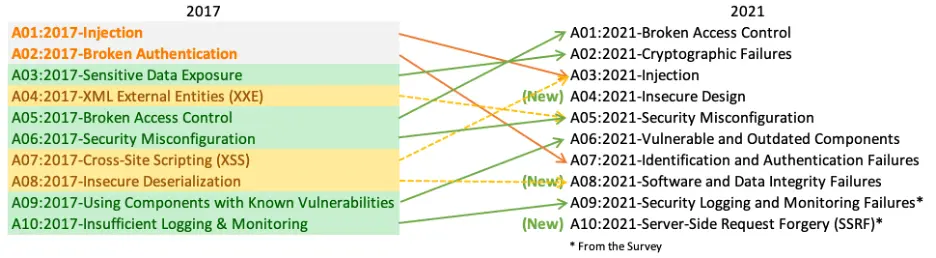

OWASP Top Ten Issues
Posted on Fri 04 August 2023 in Tech
| Abstract | OWASP Top Ten Issues |
|---|---|
| Authors | Walter Fan |
| Category | learning note |
| Status | v1.0 |
| Updated | 2023-08-04 |
| License | CC-BY-NC-ND 4.0 |
OWASP 是 Open Worldwide Application Security Project 的缩写，它是一个旨在提高软件安全的非营利性组织。它每四年会发布一个十大安全问题，最新的是 2021 年发布的 OWASP Top Ten 2021。

-
A01:2021-Broken Access Control 受损的访问控制 位列第一，从四年前的第 5 位飙升至第 1 位。 针对 94% 的应用程序做的某种形式的受损访问控制的测试，反映损坏访问控制所映射的 34 个Common Weakness Enumerations(CWE) 在应用程序中出现的次数比任何其他类别都多。
-
A02:2021-Cryptographic Failures 加密故障 上升 1 位至第 2 位，以前称为敏感数据泄露，这是广泛的表象而不是根本原因。 这里要重新关注与加密相关的故障，这些故障通常会导致敏感数据暴露或系统受损。
-
A03:2021-Injection 注入 滑落至第 3 位置。 对 94% 的应用程序针对某种形式的注入进行了测试，映射到此类别的 33 个常见漏洞列表Common Weakness Enumerations(CWE) 在应用程序中出现的次数位居第二。 在此版本中，跨站点脚本 Cross-site Scripting(XSS)现在也属于此类别。
-
A04:2021-Insecure Design 不安全的设计 是 2021 年的一个新类别，重点关注与设计缺陷相关的风险。 如果我们真的想作为一个行业“左转” (更加安全)，就需要更多地使用威胁建模 (threat modeling)、安全设计模式和原则, 以及安全的参考架构。
-
A05:2021-Security Misconfiguration 安全配置错误 从上一版本的第 6 位上升 1 位； 缘于针对 90% 的应用程序做的某种形式的错误配置测试。 随着越来越多的人转向高度可配置的软件，这一类别的漏洞上升也就不足为奇了。 以前的 XML 外部实体 XML External Entities (XXE) 类别现在属于此类别。
-
A06:2021-Vulnerable and Outdated Components 易受攻击和过时的组件 以前的标题为“使用具有已知漏洞的组件”，在前 10 名社区调查中排名第 2，也有足够的数据通过数据分析进入前 10 名。 该类别从 2017 年的第 9 名上升为第 6 名，它是我们难以测试和评估风险的已知问题。 它是唯一没有将任何常见漏洞和暴露 Common Vulnerability and Exposures(CVE) 映射到所包含的 Common Weakness Enumerations(CWE) 的类别，因此将默认漏洞利用和影响权重 5.0 已计入其分数。
-
A07:2021-Identification and Authentication Failures 识别和身份验证失败 之前是 “Broken Authentication 破坏的身份验证”，现在从第 2 名下滑到第 7 名，现在它也包括与识别失败更加相关的 Common Weakness Enumerations(CWE)。 该类别仍然是前 10 名中不可或缺的一部分，但可用的标准化框架的增加似乎对此有所帮助。
-
A08:2021-Software and Data Integrity Failures 软件和数据完整性故障 是 2021 年的一个新类别，重点是在不验证完整性的情况下做出与软件更新、关键数据和 CI/CD 流水线相关的假设。通用漏洞和暴露 Common Vulnerability and Exposures (CVE) 以及通用漏洞评分系统 Common Vulnerability Scoring System (CVSS) 中的最高加权影响之一映射到此类别中 10 个 CWE 。 2017 年的不安全反序列化 (Insecure Deserialization) 现已成为这个更大类别的一部分。
-
A09:2021-Security Logging and Monitoring Failures 安全日志记录和监控故障 以前是日志记录和监控不够，它是从行业调查中添加的，从之前的第10 名上升到第 9 名。 此类别已扩展为包含更多类型的故障，测试起来具有挑战性，并且在 CVE/CVSS 数据中没有得到很好的体现。 然而，此类故障可能会直接影响可见性 (impact visibility)、事件警报 (incident alerting) 和取证 (forensics)。
-
A10:2021-Server-Side Request Forgery 服务器端请求伪造 是从 Top 10 社区调查中添加的。 数据显示，其故障率相对较低，测试覆盖率高于平均水平，利用和影响潜力的评级也高于平均水平。 此类别表明，安全社区成员告诉我们这是很重要的场景，尽管目前数据中尚未说明这一点。
本作品采用知识共享署名-非商业性使用-禁止演绎 4.0 国际许可协议进行许可。